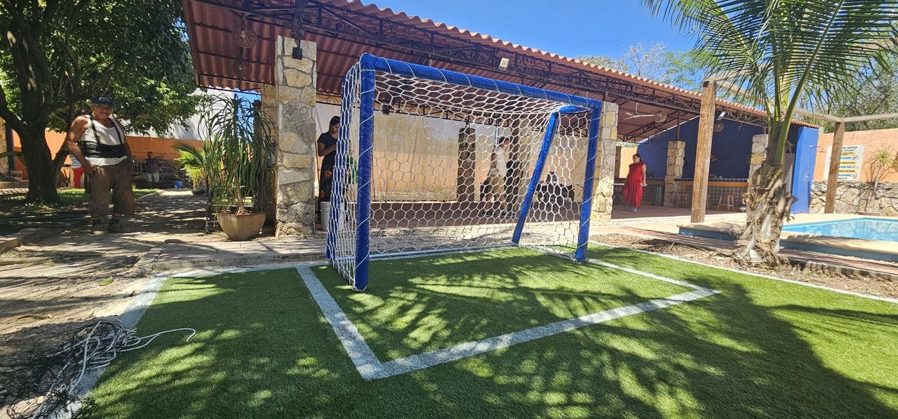
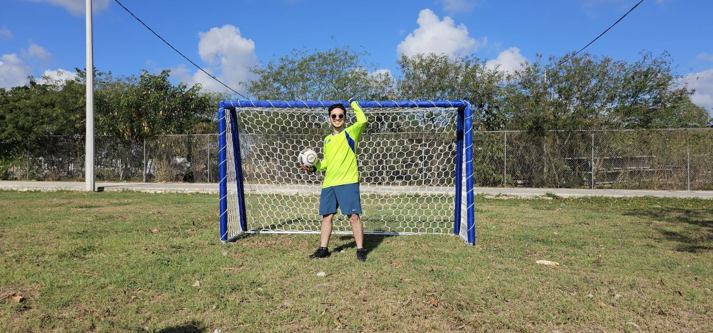
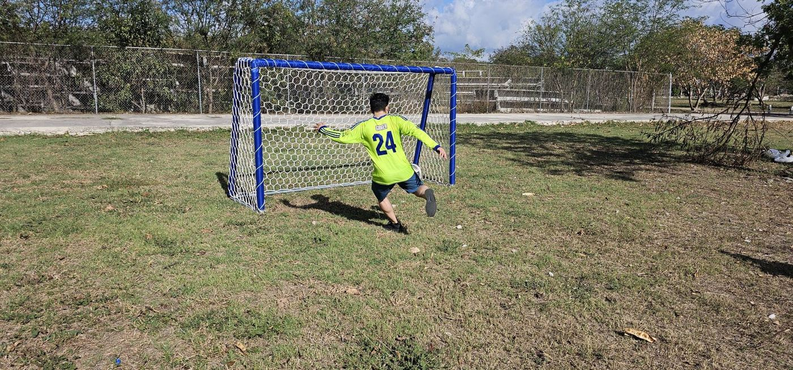
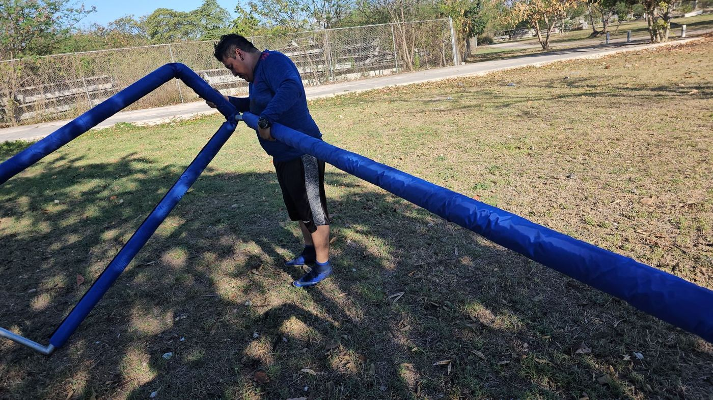

Así se ve en la cancha

Medidas
| A | Travesaño (ancho) | 3.2 m |
| B | Poste (altura) | 1.8 m |
| C | Profundidad superior | 0.5 m |
| D | Profundidad inferior | 1 m |
¿Necesitas otra medida? También la hacemos a la medida.

Ficha técnica
- Tubo galvanizado (no aluminio).
- Protección acojinada: polifoam con lona Oplex de alta tenacidad.
- Forro del color que tú quieras (los más pedidos: azul y rojo).
- Red hexagonal blanca incluida: poliéster trenzado de 60 filamentos, hexágono de 10 × 10 cm.
- Resistente al sol y a la lluvia.
Fotos





🚚 Envío a toda la repúblicaLlega bien emplayada.
🎬 Video de armadoTe mandamos el video para armarla paso a paso.
📞 AsesoríaPor teléfono o videollamada, si tienes dudas.
Tu cotización te llega en el chat
Regresa a la conversación: ahí te mandamos tu cotización.